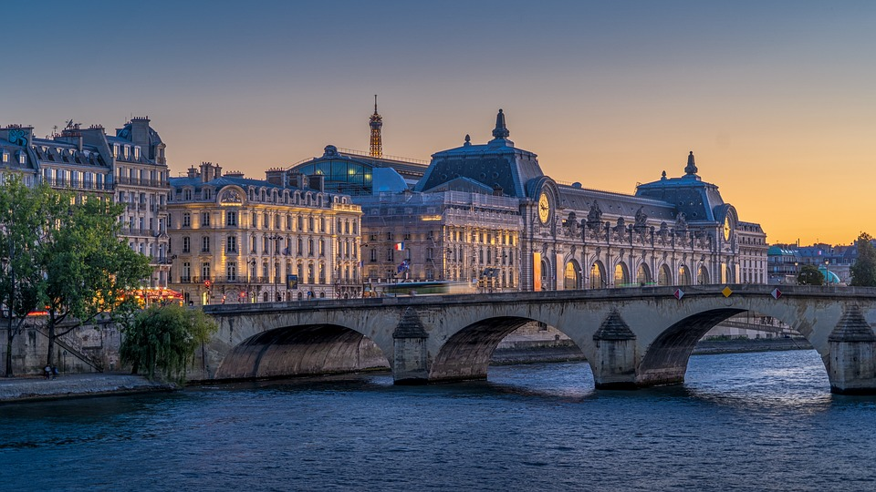
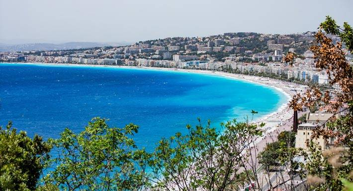
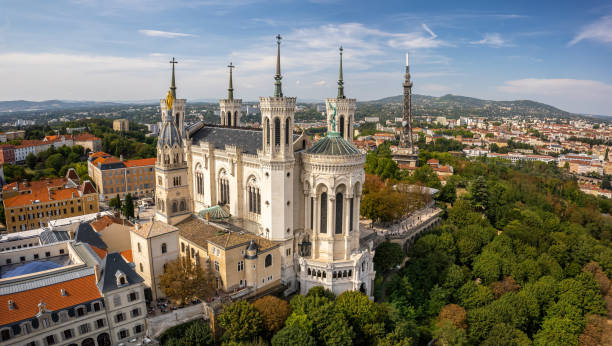
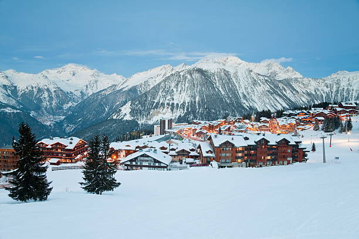
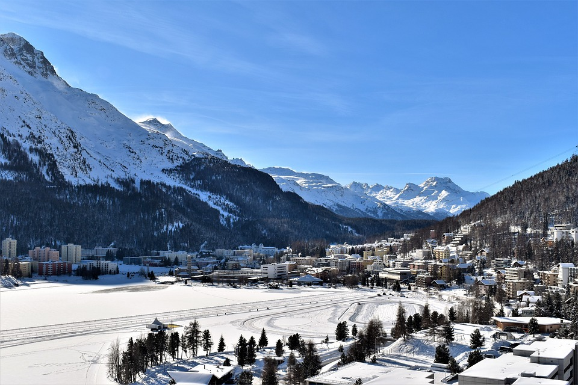
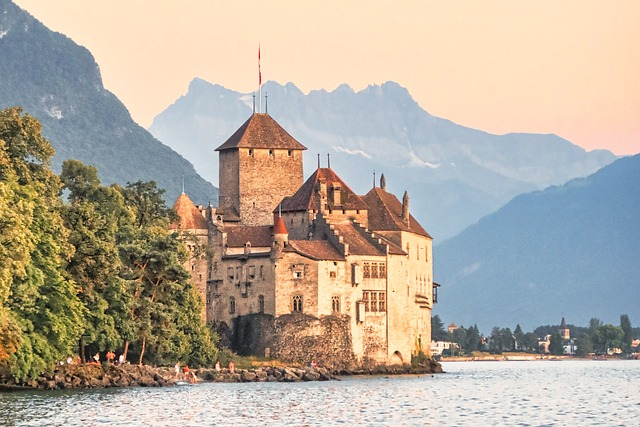
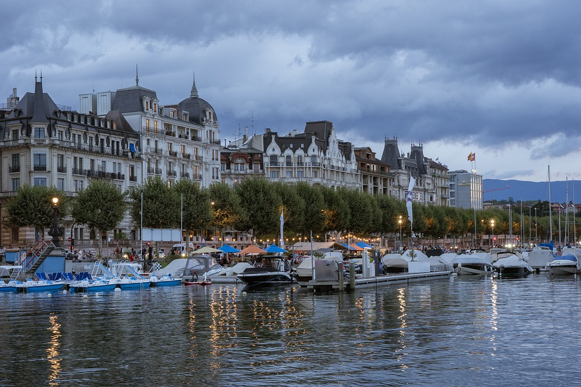
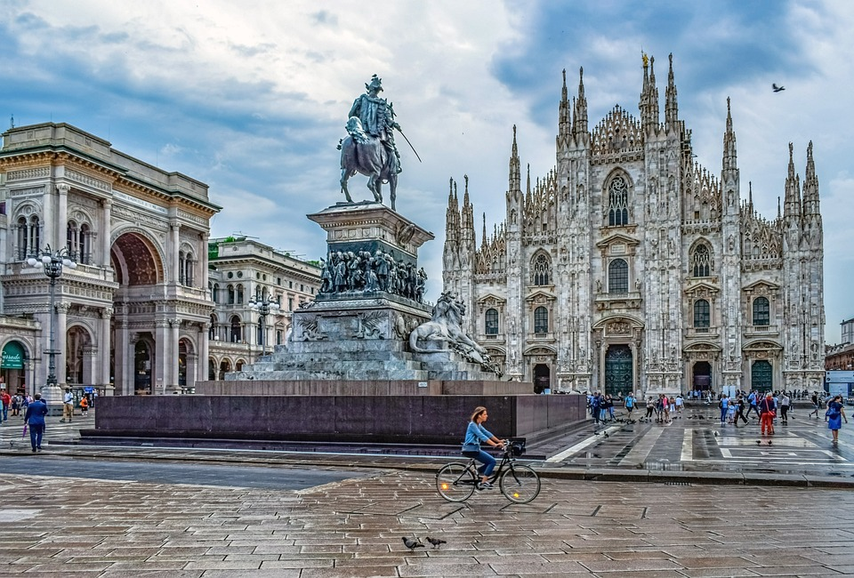
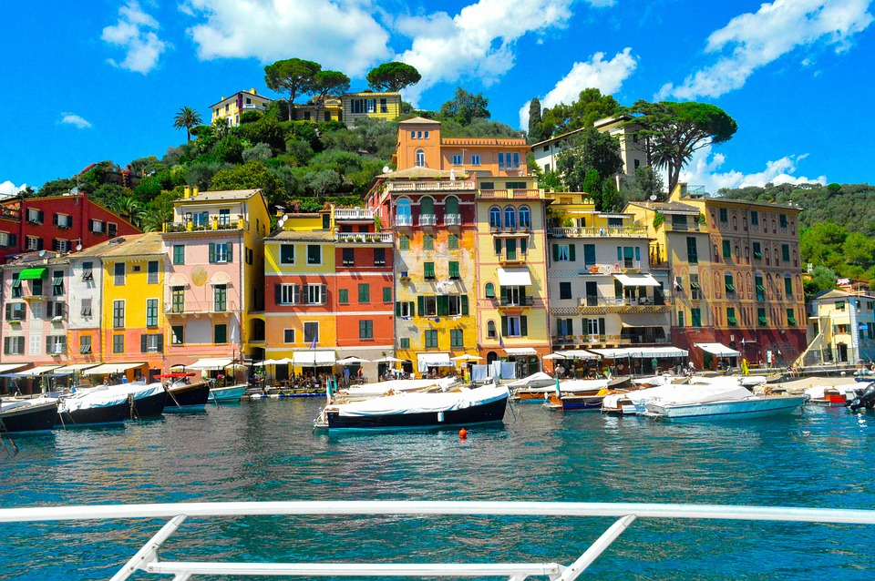
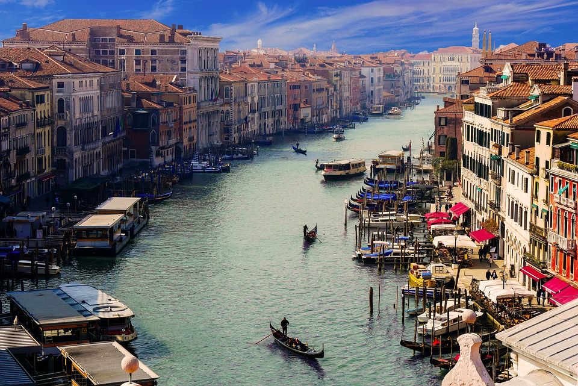

Paris, la Ville Lumière, fascine par son histoire, sa culture et son élégance. De la majestueuse Tour Eiffel au charme bohème de Montmartre, la ville offre une expérience inoubliable. Les bistrots animés, les musées de renommée mondiale.
France 
Paris

Nice

Nice, sur la Côte d'Azur, ses rues pittoresques et ses marchés animés. Nice capture les cœurs des voyageurs avec son style de vie enchanteur.
Lyon
Lyon, où la gastronomie exalte à chaque coin de rue et l'architecture historique invite à la contemplation. Une expérience unique vous attend dans cette ville française vibrante et accueillante.
Courchevel 1850
Courchevel 1850, une destination renommée pour son ski de classe mondiale, ses boutiques haut de gamme et ses restaurants étoilés. Une escapade inoubliable dans les Alpes françaises vous attend.
Suisse
Zurich

Zurich, où l'élégance urbaine rencontre la beauté naturelle des Alpes suisses. Découvrez une ville dynamique alliant histoire, culture et modernité à chaque coin de rue. Venez vivre l'expérience Zurichoise inoubliable.
St. Moritz
St. Moritz, joyau des Alpes suisses, où luxe et nature se rencontrent dans une harmonie parfaite. Explorez les montagnes majestueuses, profitez des sports d'hiver de classe mondiale et détendez-vous dans une atmosphère de glamour alpin.
Montreux
Montreux, perle de la Riviera suisse, où le lac Léman rencontre les majestueuses montagnes des Alpes. Plongez dans une ambiance de détente et de culture, où la musique, les festivals et la gastronomie vous promettent une expérience inoubliable.
Genève
Genève, la ville des rêves au bord du lac Léman. Plongez dans un mélange exquis de sophistication internationale et de charme local. Laissez-vous séduire par l'atmosphère cosmopolite et les paysages à couper le souffle.
Italie 
Milan
Milan, capitale de la mode et du design, où l'histoire rencontre l'innovation. Explorez une métropole dynamique et cosmopolite, découvrez ses trésors artistiques, sa gastronomie raffinée et son shopping de classe mondiale.
Portofino
Portofino, joyau de la Riviera italienne, où le luxe discret rencontre la beauté naturelle. Découvrez un petit coin de paradis méditerranéen, avec ses maisons colorées, ses eaux cristallines et son ambiance élégante et décontractée.
Venise
Venise, la ville des canaux enchantés et des ruelles romantiques. Laissez-vous séduire par son charme intemporel et son histoire captivante lors d'une promenade inoubliable à travers ses canaux et ses ponts pittoresques.
Rome

Rome, la ville éternelle où chaque pierre raconte une histoire vieille de millénaires. Plongez dans l'atmosphère vibrante de la capitale italienne, découvrez ses trésors artistiques et architecturaux, et laissez-vous envoûter par son art de vivre incomparable.